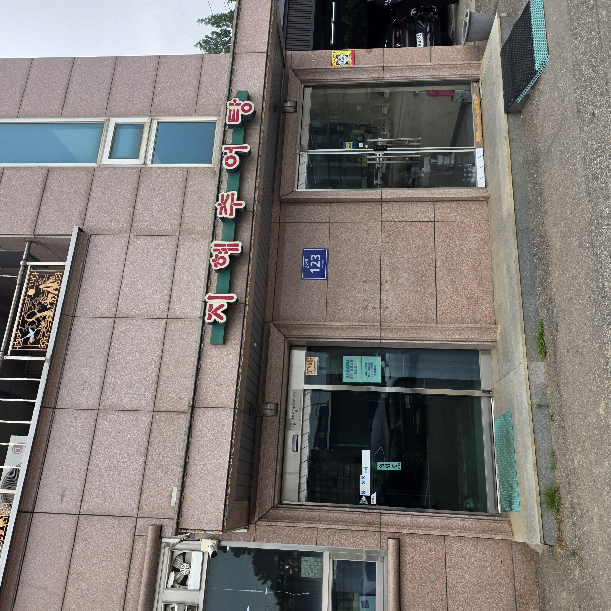
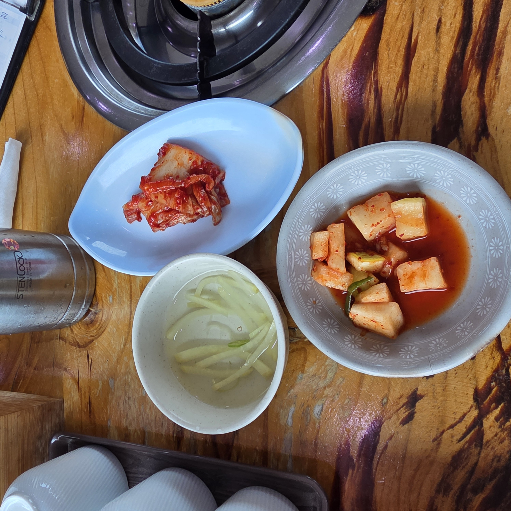
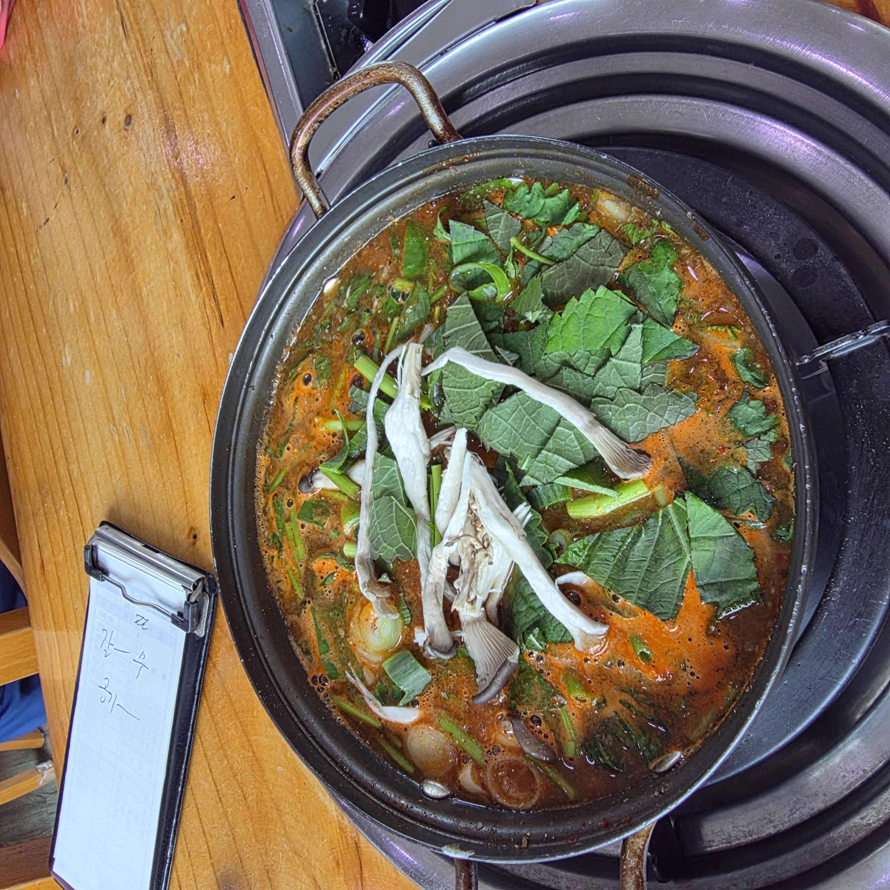
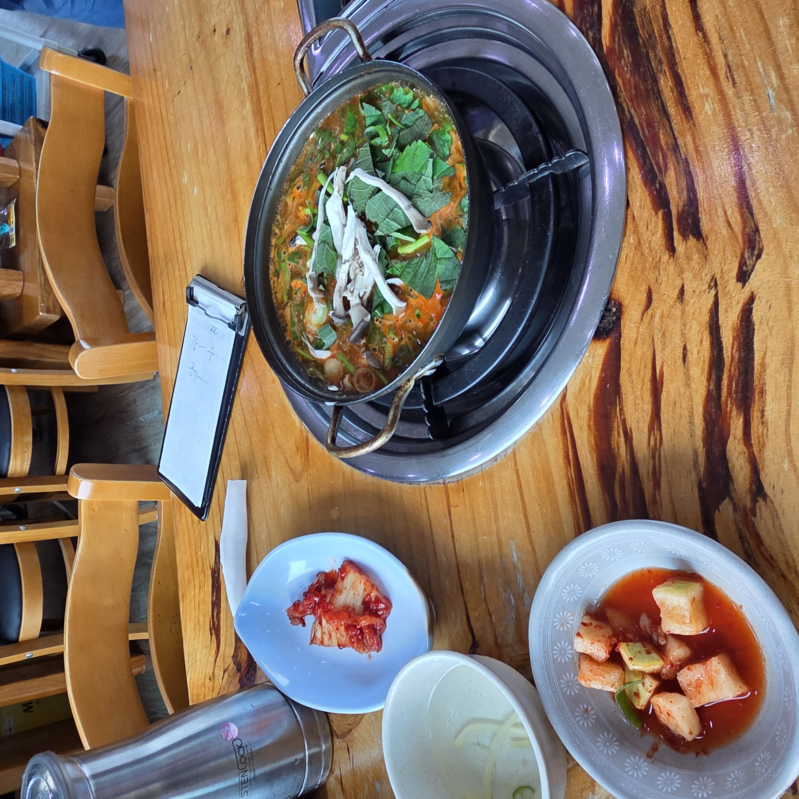
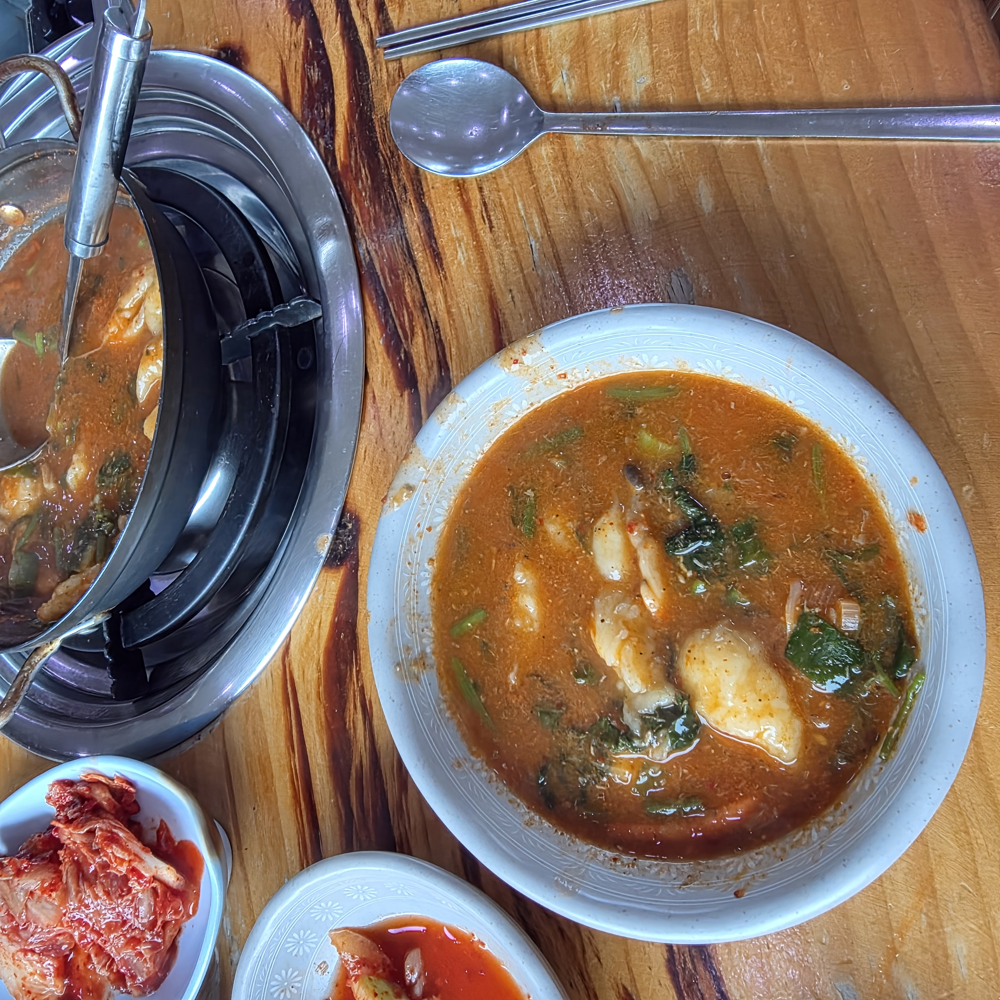

김포 월곶·강화 방면으로 나갈 일이 있어 점심을 어디서 먹을까 하다가, 예전부터 지역에서 소문난 곳이라는 지혜추어탕에 들렀습니다. 결론부터 말하면 국물이 얼큰하고 진한데 비린내가 전혀 없어서 한 그릇을 정말 개운하게 비웠습니다. 흔한 남원식 들깨 추어탕이 아니라 고추장 베이스의 어죽 스타일이라, 추어탕을 별로 안 좋아하던 저도 부담 없이 먹었네요. 방문일 기준으로 사진과 함께 솔직하게 정리해 봅니다.

지혜추어탕은 경기 김포시 월곶면 군하로 123에 있습니다. 김포 시내에서는 살짝 외곽이고, 강화도 방면으로 넘어가는 길목이라 나들이 오가는 길에 들르기 좋은 위치예요. 번화가 맛집처럼 화려한 곳은 아니고, 동네 단골이 꾸준히 찾는 노포 분위기입니다.
차로 가시는 분들은 매장 앞에 주차 공간이 있어 편했습니다. 대중교통보다는 자차나 드라이브 코스로 들르기 좋은 자리라고 느꼈어요.
추어탕이라고 하면 보통 남원·남도식의 들깨가루와 시래기가 들어간 걸쭉하고 구수한 국물을 떠올리는데, 지혜추어탕은 결이 다릅니다. 여기는 고추장을 베이스로 한 얼큰한 어죽 스타일이에요. 그래서 국물 색부터 붉고, 첫 숟갈에 칼칼하게 확 올라옵니다.
미꾸라지는 곱게 갈려 국물에 녹아 있어서 형체가 부담스럽지 않고, 대신 들깻잎이 아주 수북하게 올라갑니다. 여기에 느타리버섯과 대파가 넉넉히 들어가 향이 좋았어요. 들깨 추어탕이 물리거나 비린 게 걱정되는 분이라면 이 고추장식이 오히려 입에 잘 맞을 수 있습니다.
자리에 앉으니 밑반찬이 깔립니다. 화려하진 않지만 배추김치, 깍두기(석박지), 양파 초절임 구성이 추어탕과 잘 어울렸어요. 특히 새콤한 양파절임은 얼큰한 국물 사이사이 입을 개운하게 잡아줍니다.
밥은 김포 특산 '금쌀'을 쓴다고 알려져 있는데, 스테인리스 공기에 담겨 나온 밥알이 확실히 찰지고 윤기가 돌았습니다. 국물에 말아 먹기에도, 그냥 반찬과 먹기에도 좋았네요.

주문한 추어탕은 커다란 냄비째 테이블 버너(부루스타)에 올려 나왔습니다. 위에는 들깻잎과 느타리버섯, 대파가 소복이 얹혀 있고, 팔팔 끓기 시작하면 그때 덜어 먹는 구조예요. 끓을수록 들깻잎 향이 국물에 배어들어 더 깊어집니다.
혼자여도 1인분 주문이 가능하고, 크기도 소·중·대·특대로 선택할 수 있어서 인원이나 배고픔에 맞춰 시키기 좋았습니다. 여럿이 가면 큰 사이즈로 시켜 나눠 먹는 것도 방법이겠네요.


이 집을 이야기할 때 빼놓을 수 없는 게 사리입니다. 추어탕에 기본으로 수제비·소면 중 하나, 또는 반반을 넣어 주는데, 저는 수제비를 골랐어요. 얼큰한 국물에 쫄깃한 수제비가 들어가니 그 자체로 든든한 한 끼가 됩니다.
개인 그릇에 국물과 수제비, 밥을 함께 덜어 먹으니 어죽처럼 걸쭉하고 포근한 맛이 났어요. 실제로 다른 방문객 후기에서도 "수제비가 특히 좋다"는 평이 많은데, 먹어 보니 그 말이 이해가 갔습니다.

추어탕을 아주 즐기는 편은 아닌데도 국물이 칼칼하고 개운해서 부담 없이 한 그릇을 다 비웠습니다. 비린내가 없다는 점, 수제비 사리로 든든하다는 점, 1인분도 된다는 점이 특히 마음에 들었어요.
| 👍 좋았던 점 | 진하고 얼큰한 고추장 국물, 비린맛 없음 · 수제비 사리 · 1인분 가능 · 매장 앞 주차 · 찰진 금쌀밥 |
| 🙂 참고할 점 | 화려한 인테리어는 아닌 소박한 노포 · 시내에서 살짝 외곽 · 매주 월요일 휴무 · 금요일은 오후 4시까지 |
정리하면 깔끔하고 얼큰한 고추장 추어탕을 찾는 분, 김포·강화 나들이 길에 든든한 한 끼가 필요한 분께 추천할 만한 곳입니다.
| 상호 | 지혜추어탕 |
| 주소 | 경기 김포시 월곶면 군하로 123 (갈산리 508-43) |
| 전화 | 031-987-0986 |
| 영업시간 | 화·수·목·토·일 09:30–18:30 / 금 09:30–16:00 |
| 휴무 | 매주 월요일 |
| 메뉴·가격 | 추어탕 8,000원(소·중·대·특대) · 미꾸라지튀김 20,000원 · 공깃밥 1,000원 |
| 사리 | 수제비 · 소면 · 반반 중 선택 |
| 편의 | 1인분 주문 가능 · 매장 앞 주차 · 포장 가능 |